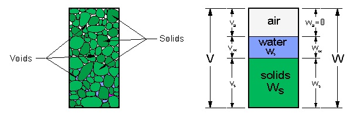

Soil Mechanics
Please close that window If you close it, you'll return to the Soil Mechanics home page.
Soil Texture
Soil Propertiesre Class
Cohesive & non cohesive
soils
Soil bearing capacity
Slip circle theory
Retaining structures
Rock Formation
Topographical and geological
maps
Example calculations

